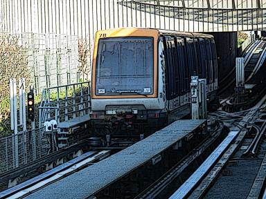
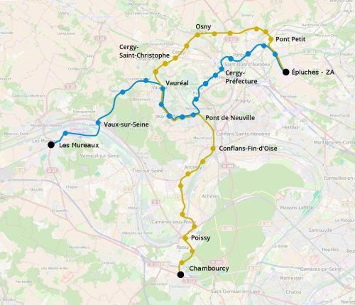

Le Cergyval

Un réseau de VAL pour desservir la ville nouvelle de Cergy - Pontoise.
Voir le tracé
La ville nouvelle de Cergy-Pontoise est le résultat d'un projet d'urbanisme datant des années 1960 dont le but était de canaliser l'urbanisation de l'Île-de-France.
Ce projet a été un succès et aujourd'hui le secteur Cergy – Pontoise – Saint-Ouen-l'Aumône est l'un des secteurs les plus attractifs de l'Île-de-France hors de Paris, pour se loger, pour étudier ou pour travailler.
L'urbanisation de Cergy s'est faite le long d'un axe routier, le Boulevard de l'Oise, qui s'étend de Cergy-Préfecture à Jouy-le-Moutier.
Parallèlement à cet axe une nouvelle ligne de chemin de fer, la ligne de Cergy, a été construite pour relier les secteurs nouvellement urbanisés à Paris. Elle a été intégrée plus tard au RER A et prolongée à deux reprises de Cergy-Préfecture à Cergy-Saint-Christophe puis Cergy-le-Haut.
Aujourd'hui la ligne de Cergy dessert deux des trois grands pôles de transports de Cergy-Pontoise: La gare de Cergy-le-Haut et la gare de Cergy-Préfecture. Elle n'est pas reliée de manière efficace au troisième grand pôle de la ville nouvelle: la gare de Pontoise.
L'absence de connexion entre la ligne de Cergy et les autres lignes de chemin de fer qui passent dans le voisinage de la ville nouvelle font qu'il n'est pas simple de se déplacer de Cergy pour aller à Saint-Ouen-l'Aumône, à Poissy, aux Mureaux ou à Mantes-la-Jolie.
A ce problème de déplacement s'ajoute un problème de canalisation de l'evolution de la ville nouvelle: l'urbanisation de la commune de Cergy approche la saturation et maintenant le dévelopement de Cergy-Pontoise se fait le long de la vallée de l'Oise, quasiment jusqu'à Conflans-Sainte-Honorine et loin des infrastructures ferroviaires existantes.
Le réseau de Cergyval avec ses deux lignes entend corriger ces problèmes de mobilité.
La ligne 1 du Cergyval irait de Saint-Ouen-l'Aumône à Poissy en passant par le nord de Pontoise, Osny, Cergy-Saint-Christophe et Conflans-Fin-d'Oise.
La ligne 2 du Cergyval irait de Saint-Ouen-l'Aumône aux Mureaux en passant par la gare de Pontoise et Cergy-Préfecture. Les deux lignes auraient une section commune de quelques kilomètres entre Vauréal et le pont de Neuville.
Haut de page.

Haut de page.
{kind=link}

Si vous êtes intéressé par un des projets décrits sur ce site, partagez cette page sur les réseaux sociaux ou par courriel ou parlez-en autour de vous.
Si vous souhaitez travailler à la concrétisation de ces projets, passez à l'action et contactez nous.
Commenter